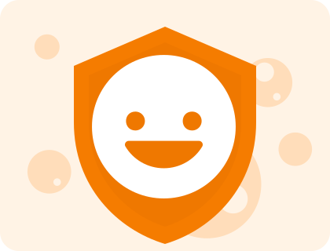

SmileyMeter
Privacy Policy
Last updated: April 25, 2026

Who We Are
SmileyMeter is a feedback app used in venues such as clinics, restaurants, and service points to collect quick mood-based feedback.
Summary
- We do not require user accounts to submit feedback.
- We do not intentionally collect personal identifiers from respondents.
- Feedback is stored locally on the device by default.
- App operators control export, retention, and deletion of feedback data.
Data We Process
When someone taps a feedback button, the app may store:
- Selected mood/response type.
- Timestamp of the feedback event.
- Optional venue display settings configured by the operator.
This data is used to show on-device results and trend summaries for venue staff.
Children's Privacy
SmileyMeter may be used in environments where children under 13 can submit anonymous feedback taps. The app is not designed to collect names, contact details, exact location, or other direct identifiers from children.
How Data Is Stored and Shared
- Feedback data is stored on the local Android device database.
- The app does not share feedback events with third parties by default.
- Venue staff can export feedback reports (for example CSV) and are responsible for secure handling after export.
Retention and Deletion
Data retention is managed by the venue/operator based on their local policy. Operators can clear app data or remove app storage on the device to delete data.
Security
We use reasonable safeguards supported by the Android platform. No method of storage or transmission is 100% secure, but we aim to minimize data collection and keep processing local-first wherever possible.
International Use
Because data is stored locally by default, cross-border transfer usually does not occur unless the venue/operator exports or moves data themselves.
Policy Updates
We may update this Privacy Policy from time to time. The latest version will be published at this page URL.
Contact
For questions about this privacy policy, contact us via the support option in the app or the repository linked from the app's store listing.